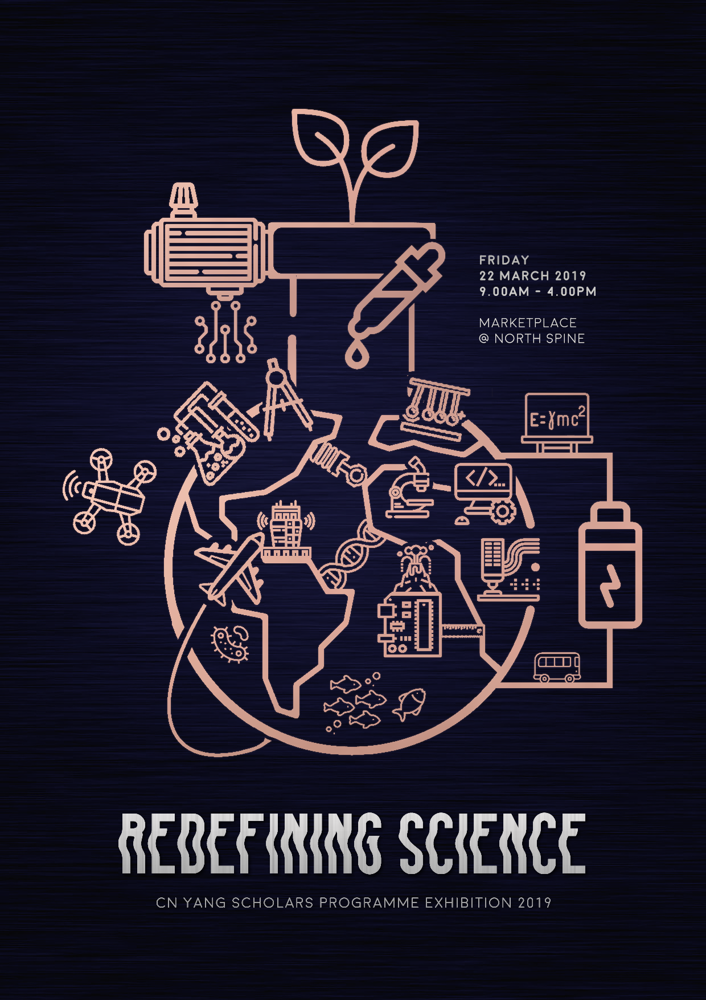
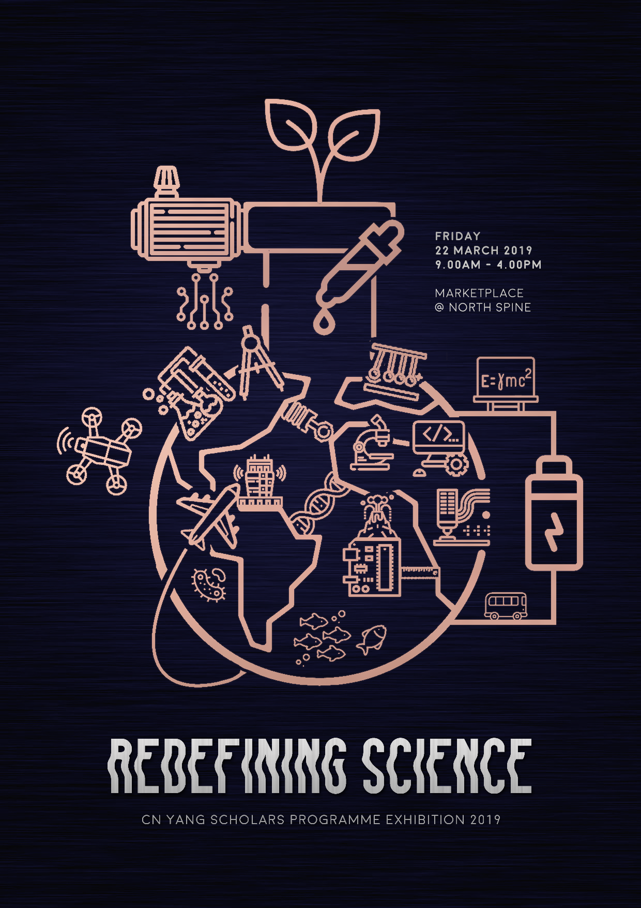

design@beverleyy:~/web_design/magnusthemes$ info
MagnusThemes is a Tumblr theme blog featuring fun, sleek and quirky themes. I have been running this since 2014.
Live view
design@beverleyy:~/web_design/magnusthemes$ home_page
Blog layout: fully responsive, featuring a hand-drawn isometric-style hero image on the home page.
design@beverleyy:~/web_design/magnusthemes$ centum_theme
A constructed grid theme with a fixed grid sidebar, API-generated featured posts. Very Javascript-based.
View on Tumblr
design@beverleyy:~/web_design/magnusthemes$ nocturne_theme
A sleek and functional Wordpress-style theme with related posts and API-generated featured posts.
View on Tumblr
design@beverleyy:~/web_design/magnusthemes$ aeolus_page
A modular CSS-grid-based custom about page layout. It's like a building-block set, choose whatever blocks you want and place them in any order you want.
View on Tumblr
design@beverleyy:~/web_design/magnusthemes$ fulminata_theme
A simple, minimalist sidebar theme with stripe accents.
View on Tumblr
design@beverleyy:~/web_design/magnusthemes$ phantom-bullet_theme
A fresh, clean take on Sword Art Online's UI.
View on Tumblr
design@beverleyy:~/web_design/year_in_pixels$ info
A simple diary-like webpage with a Javascript-generated grid. Every day is a different color.

design@beverleyy:~/web_design/cnysc$ info
As the Press & Publicity (P&P) Director of the 11th Executive Committee, I redesigned the CN Yang Scholars' Club website using Wordpress, improving the accessibility and ease of usage for future P&P subcommittees.

design@beverleyy:~/web_design/purdue_aae450$ info
As the webmaster for our senior design project during my time at Purdue University, I was tasked with uploading all our files to the Purdue servers as well as making the site compliant with the Americans for Disabilities Act. This involved redoing the color scheme, increasing the font size and using better semantic elements. I was also in charge of all designs and graphics.
Brochure

design@beverleyy:~/web_design/ntulearn_redesign$ info
The default NTULearn UI has small text and a cluttered feel - using custom CSS injected into the browser via Stylus, I cleaned up NTULearn, increased accessibility and made it look classier.

 
